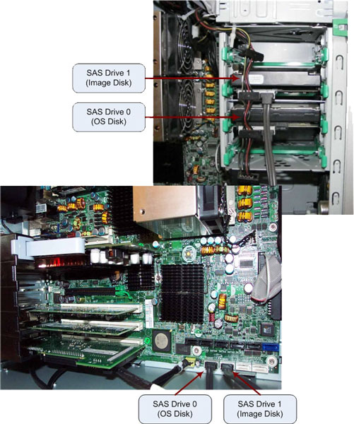
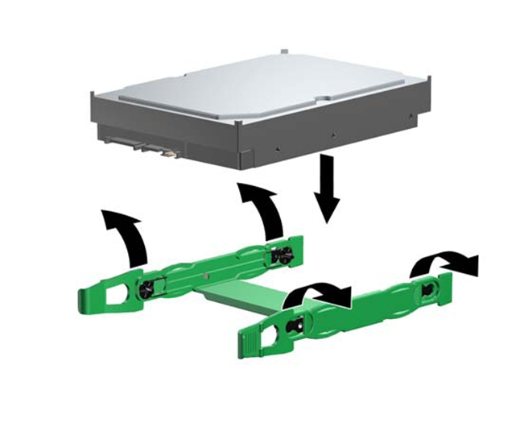
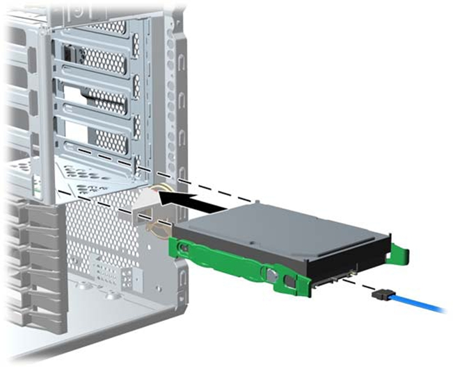

Operating Documentation
Direction 5193574-800, Rev# 22
Module Version 2.0, Version Date 7/15/13
Operating Documentation |
| ||||
| System board or component damage could result. | ||||
| The cooling fan is off only when the Host Computer is turned off or the power cable has been disconnected. The cooling fan is always on when the Host Computer is in “On” or “Standby” mode. | ||||
| You must disconnect the power cord from the power source before opening the Host Computer. |
| ||||
| Turn off the Host Computer before disconnecting any cables. | ||||
| ||||
TO PREVENT DAMAGE TO COMPONENTS WITHIN THE HOST COMPUTER, OBSERVE
THE FOLLOWING ESD PRECAUTIONS:
FOR FURTHER INFORMATION REGARDING ESD PROTECTION, REFER TO THE SAFETY CHAPTER IN THIS PUBLICATION | ||||
Disconnect the power and data cables from the suspected faulty hard drive.
Illustration 1: HDD Location in HP xw8400

Push in on the green drivelock rails release tabs and slide the hard drive out of the chassis.
Remove the hard drive rails from the old hard drive and attach the rails to the new hard drive by aligning the notches with the holes on the drive and squeezing it into place.
Illustration 3: Hard Drive Rail Installation

Select a drive bay in which to install the drive.
Push the drive into the selected bay until it snaps into place.
Illustration 4: Hard Drive Installation

Attach the power and data cables to the drive.
Return to the HP xw8400 Lower Level FRU Replacement procedure.